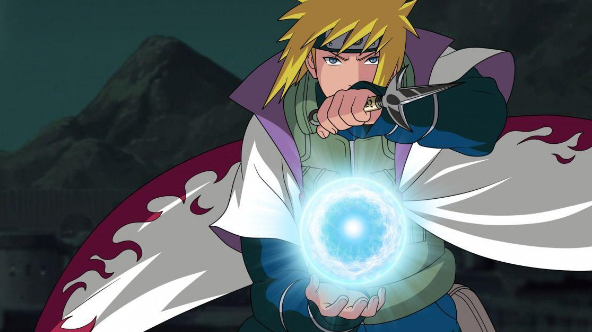
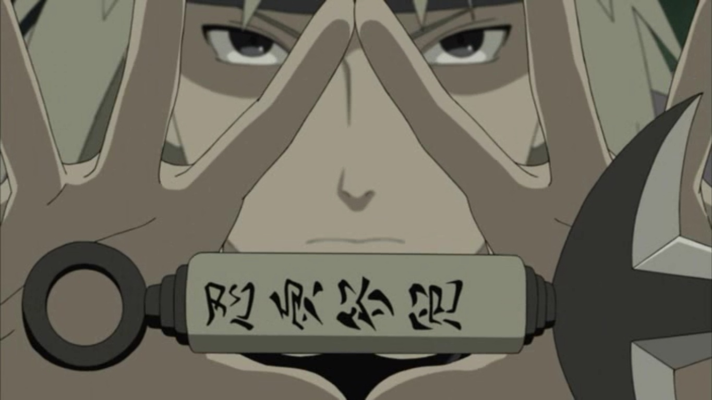
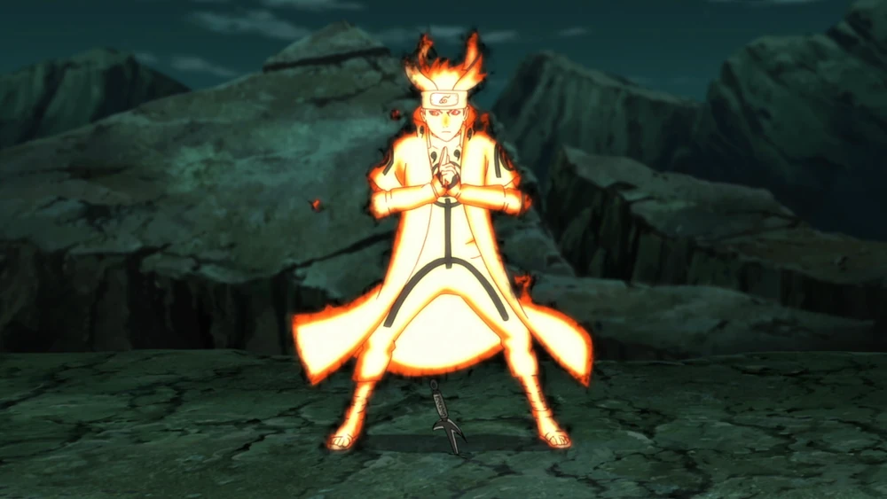

Minato Namikaze (波風ミナト, Namikaze Minato) was the Fourth Hokage(四代目火影, Yondaime Hokage) of Konohagakure, celebrated across the shinobi world as Konoha's Yellow Flash (木ノ葉の黄色い閃光, Konoha no Kiiroi Senkō) for his extraordinary speed and mastery of the Flying Thunder God Technique, which allowed him to strike down enemies in an instant. Known for his calm intellect, humility, and unwavering sense of duty, Minato was not only a brilliant strategist and fighter but also a compassionate leader who deeply cared for his village and its people. During the catastrophic Nine-Tailed Fox's attack on the Hidden Leaf, Minato demonstrated the ultimate act of heroism by sacrificing his life to protect the village and his newborn son, Naruto Uzumaki. He sealed half of the Nine-Tails within himself and the other half inside Naruto, entrusting his child with the power to one day overcome the darkness that threatened their world. Even after his death, Minato's legacy lived on through his teachings, his ideals, and the strength of the son who would one day fulfill his dream of bringing peace to the shinobi world.
1. Rasengan

Minato spent three years developing one of his signature techniques, the Rasengan. He created it for his then-girlfriend, Kushina Uzumaki, both for Kushina to use for her own protection and so he himself could battle beside her against enemy Jinchūriki. Its power proved able to stalemate Kurama's Tailed Beast Ball. The highest level of shape transformation, it gives him an edge in combat due to requiring no hand seals to create and being self-sustaining. Minato's mastery allowed him to form it with either hand instantly and vary its size from standard to Big Ball Rasengan-sized. He intended to combine it with his element chakra, but failed to before his early passing. When using Tailed Beast Mode, his Rasengan becomes proportionately as large.
2. Flying Thunder God Technique

Minato had his own special brand of kunai for combat; triple-prong kunai for better offensive potential. He would throw them at opponents or wield them as melee tools, even in his mouth. Their main use was for the Flying Thunder God seals they were marked with, allowing him to teleport to wherever one of the kunai were. He carried a large number of kunai in the field that he would scatter across a wide area so that he could move around with more options. Although his normal tactics with kunai did not require precision, Minato nevertheless had excellent aim and could coordinate his throws' timing and placement to allow him to perform complex manoeuvres.
3. Jinchūriki Transformation

Minato became the jinchūriki of the Kurama's Yin-half shortly before his death, though it wasn't until his reincarnation that he could make use of it. Unlike most tailed beasts, the Nine-Tails offered no resistance to cooperating with Minato, granting him immediate access to Nine-Tails Chakra Mode, which impressed all spectators. Minato's form was slightly darker with different markings than Naruto's but otherwise identical in appearance and abilities; he can use chakra arms, enter Tailed Beast Mode, create Tailed Beast Balls, and perform stronger versions of his usual techniques. Minato would later lose access to its power after having his half of the Nine-Tails stolen by Black Zetsu.
For more information about Minato Namikaze:
Click Here